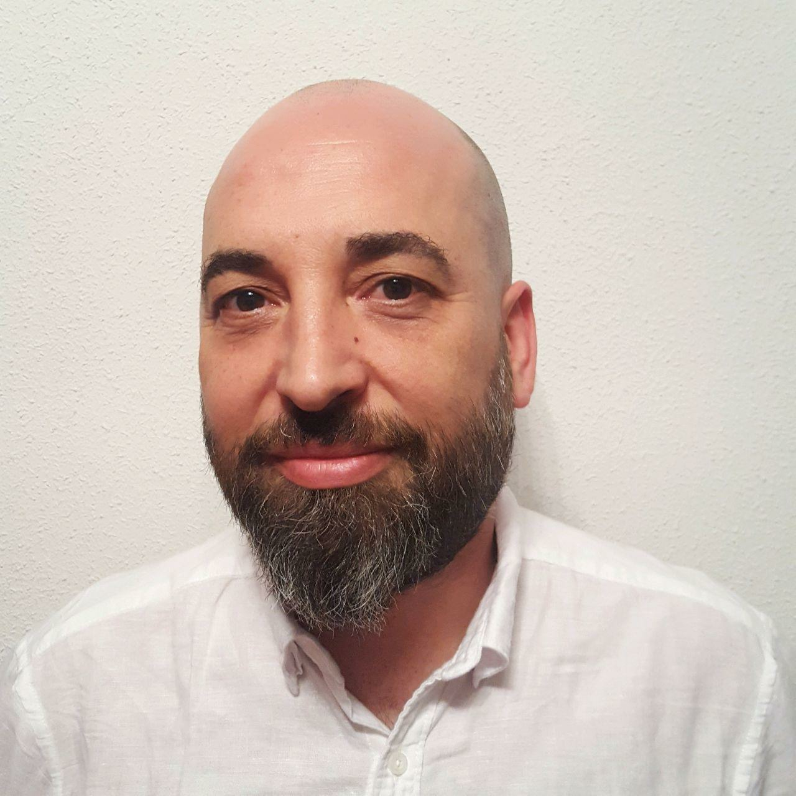
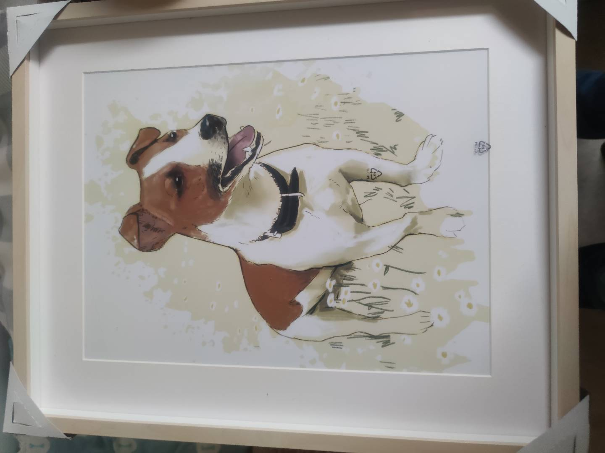
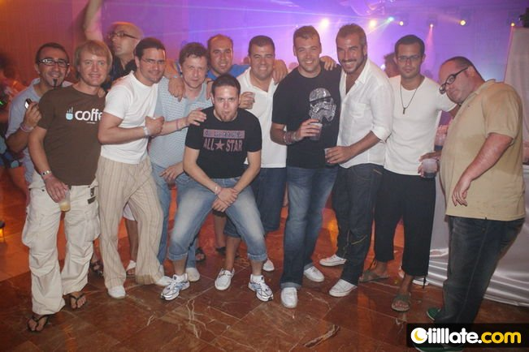
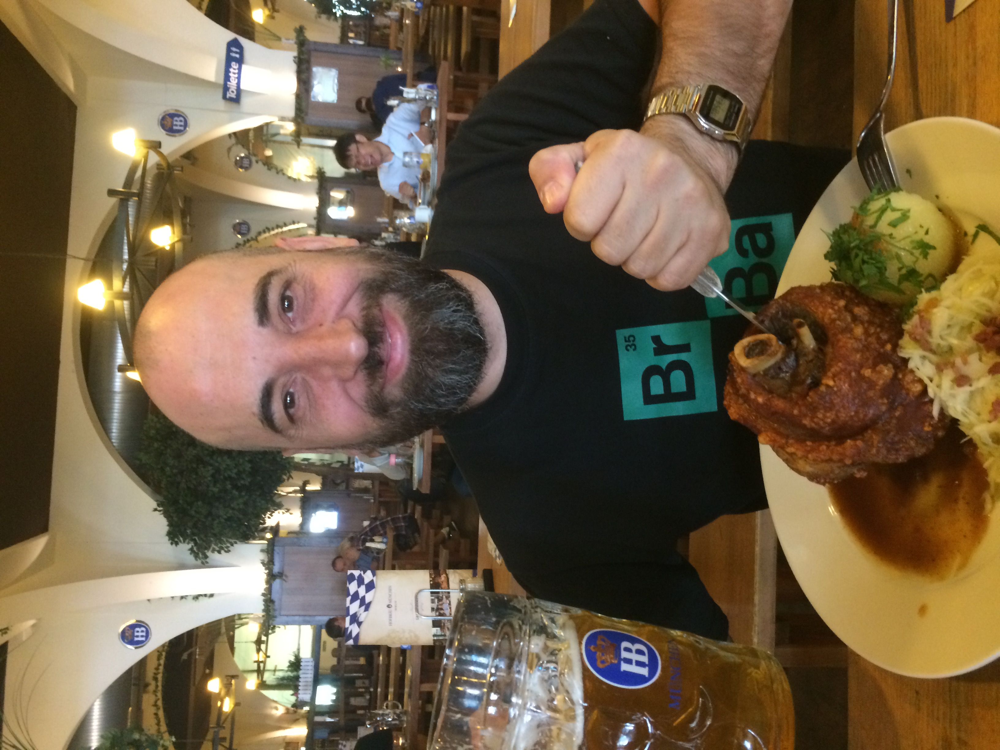
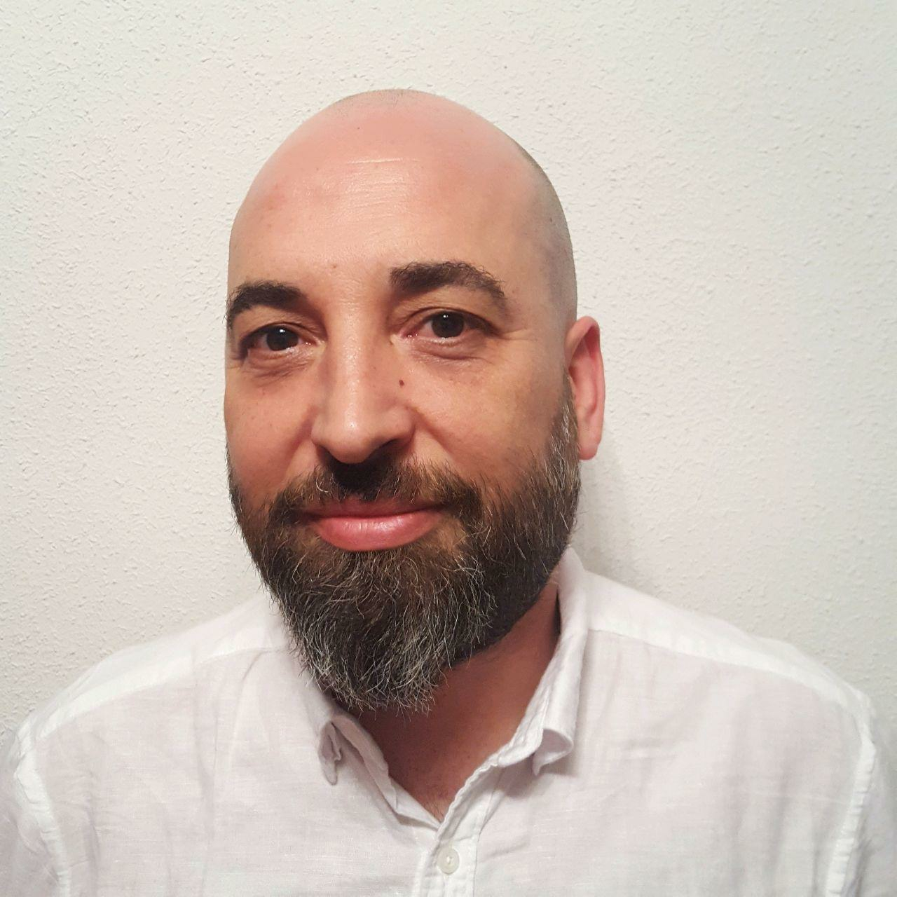
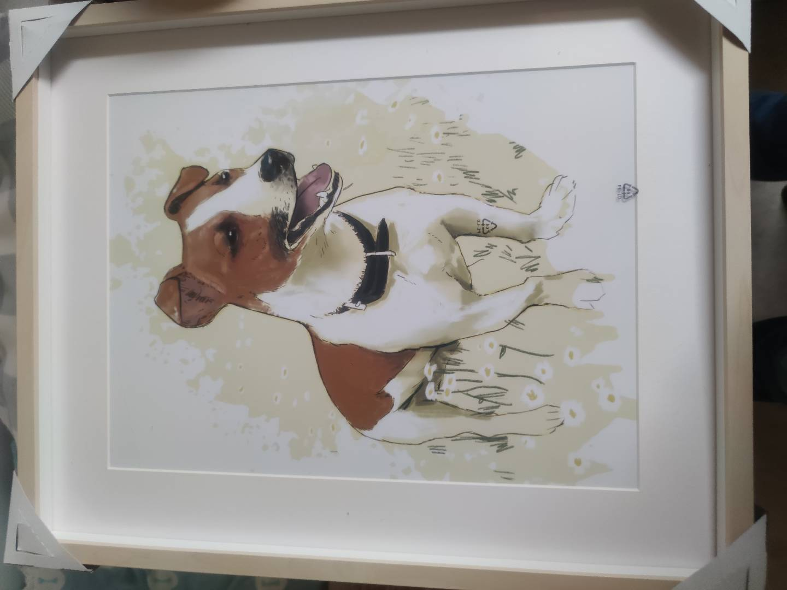
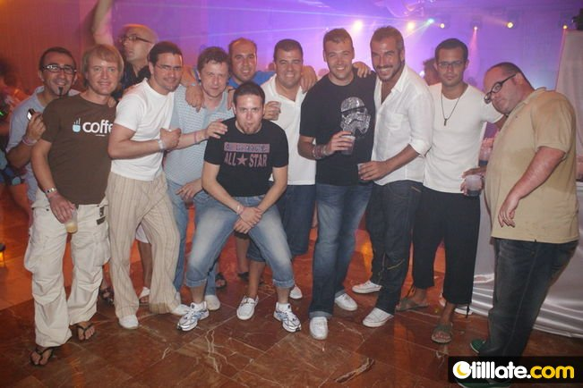
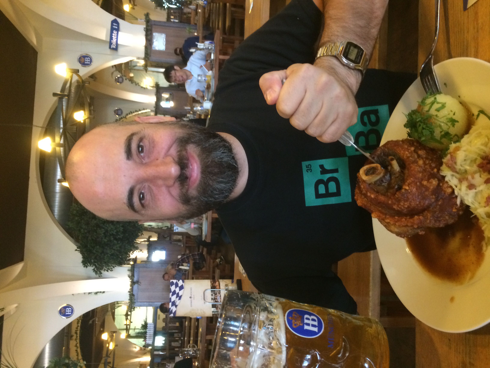

Actualmente me encuentro cursando un BootCamp de Full Stack Developer Soy un profesional metódico y organizado, con altas dotes de comunicación y don de gentes. Puedo aportar más de 17 años de experiencia en, formación, gestión de personal y atención al cliente. Tanto en mi vida personal como en el trabajo soy organizado y buen planificador, aun así, me adapto con facilidad a los cambios y tengo facilidad para aprender. Mi compromiso con el trabajo es total e intento superarme en cada proyecto, soy una persona resolutiva y con gran autonomía en las tareas.
2021-2022
Kintel Worldwide Spain Cargo: Responsable Técnico Funciones: Arranque y puesta en marcha del laboratorio y toda la infraestructura necesaria para su funcionamiento y reparación de teléfonos móviles, principalmente de teléfonos Apple. Llevar el control de las reparaciones. stock, presupuestos, gestión de los RMA… Principalmente de teléfonos móviles Apple. Diagnóstico y reparación de los teléfonos.
2019-2021
RB Europa Cargo: Técnico de Laboratorio Funciones: Reparación y puesta a nuevo de teléfonos móviles y tablets multi-marca (Samsung, Sony y Apple)
2018-2019
ICP Tech. Solution Cargo: Supervisor de laboratorio. Funciones: Reparación de teléfonos móviles principalmente de la marca Samsung. Control de producción y gestión de los recursos para la consecución de objetivos. Soporte y formación del personal técnico.
2017-2018
Phone House Cargo: Coordinador HUB. Funciones: Responsable del laboratorio técnico multi-marca (Apple, BQ, Huawei, LG, Meizu, Samsung, Sony, Xiaomi y ZTE. Gestión de presupuestos, seguimiento de los SLA de cada marca y contacto con los fabricantes. Visitas a nuestras propias tiendas para valorar a técnicos y promotores. Formación continua del personal técnico, gestión de incidencias y reclamaciones.
2005-2017
Regenersis (Moviltech, HDM y ahora CTDI) Cargo: Supervisor puntos de reparación y venta. Responsable de laboratorio. Team Manager y Formador. Funciones: Reparación y venta teléfonos móviles en los centros de El Corte Inglés. Gestión de repuestos, elaboración de presupuestos, servicio post-venta y atención al cliente. Gestión de los puntos de reparación y venta de Samsung en El Corte Inglés a nivel nacional. Entrevistas, contratación, formación y gestión de equipos. Responsable de laboratorio técnico multi-marca (Samsung, Microsoft, Sony y Apple) para las aseguradoras Telefónica Insurance (Movistar) y Assurant. Supervisión de servicios de promoción, campañas de marketing y post-venta. Puesta en marcha y arranque de un laboratorio multimarca en Tánger. Puesta en marcha de 20 puntos de reparación rápida y venta de teléfonos móviles, de las marcas, Nokia y Samsung, para Telcel por todo México.

 






